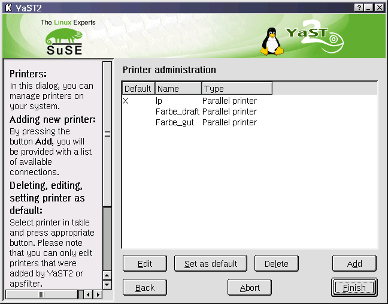
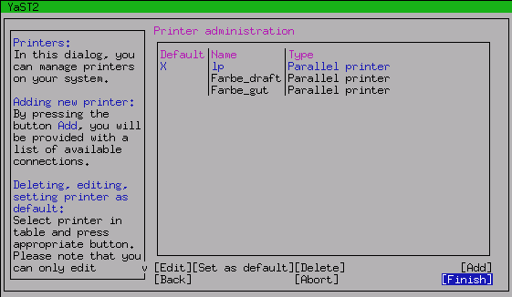
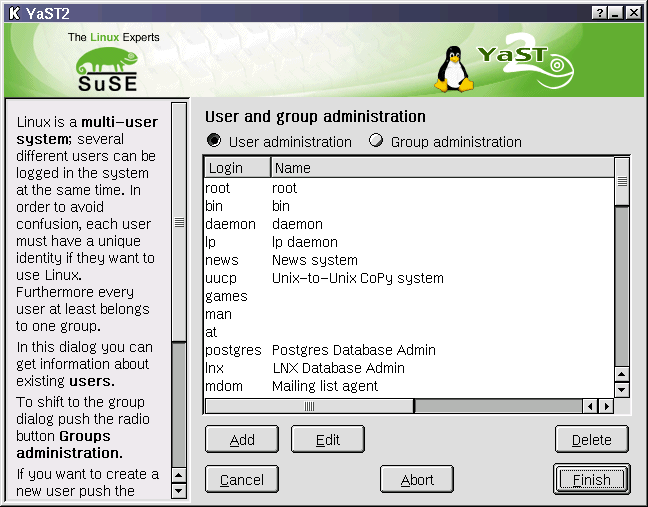
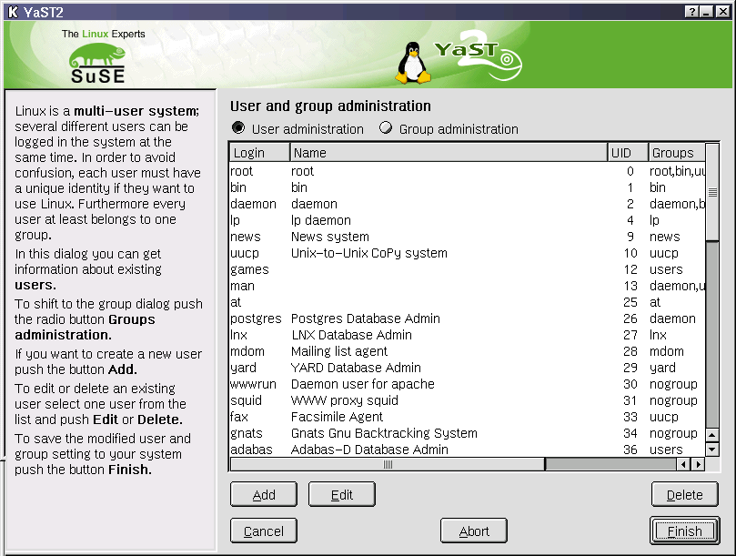
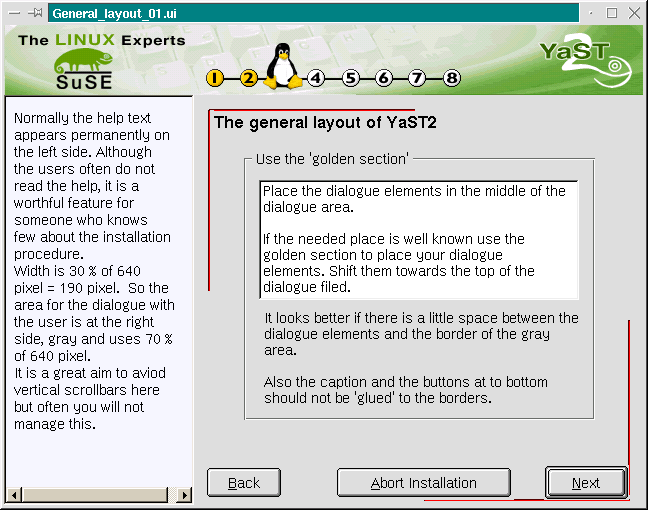
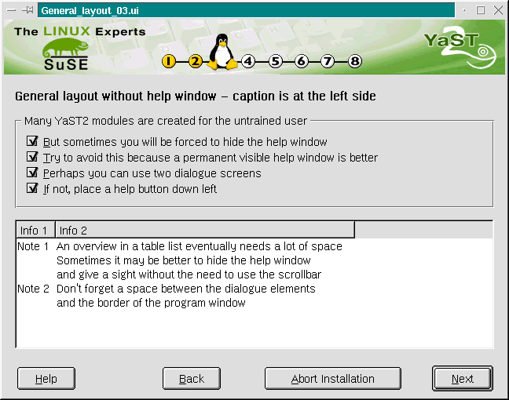
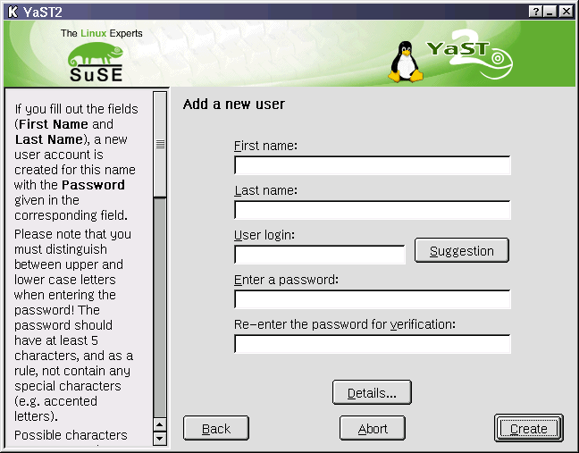
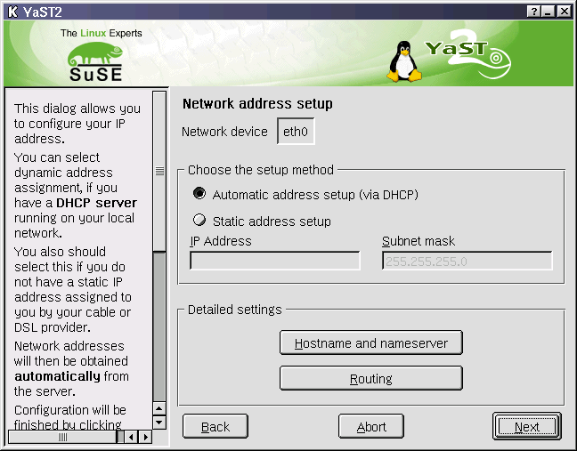

[previous page] --- [back to index] --- [next page]
[previous
page] --- [back to index] --- [next
page]
With help window
Without
help window
Place for the
'Details'/'Expert'-button
Due to the fact YaST2 is a multi-lingual & multi-platform installation configuration tool, there are a lot of restrictions to the general and the detailed design of the dialogs.
The default installation of the GUI normally will provide a screen resolution over 800 x 600 pixel, but it is strongly recommended that YaST2 modules are usable with 640 x 480 pixel. To this time there is a single exception, the YaST2 Control Center. It will start with ca. 800 x 600 pixel.
The 640 x 480 pixel mode will garant that the Ncurses text view mode will be functional (even in times of 1280 x 1024 desktops).
The two screen shots below are showing an identical dialog - the first on the KDE desktop, the second with Ncurses in a console. Both is YaST2.

YaST2
printer module 7.2 with 640 x 480 pixel
Nearby: What's not fine in the picture above?
Horizontal scroll bar in the help window
No space between the main buttons at the bottom and the push buttons to manipulate the list entry
No label for the list table, so you can not jump into the list with a key short cut
The order of the push buttons Add, Delete ... is old, see the new advice here

The
same YaST2 printer module 7.2 in Ncurses with 80 x 25 letters
Do you really realize the problems to find a fine layout?
In KDE user can increase the size of the YaST2 window. But this means a additional action to the user. A possible solution would be to ask for the screen resolution and then adjust the pop up size of the module.

SuSE
Linux 7.2 YaST2 Add user module with 640 x 480 pixel

SuSE
Linux 7.2 YaST2 Add user module with 800 x 600 pixel
The table list gives a better overview
No scroll bars in the help window
Read the text in the examples, please. The following pictures are no screen shots.

Help is an essential feature for LINUX starters. Make short and good sentences and do not make your help information at the last day.
YaST2 displays his help always on visible on the left side. The help box uses 30% of horizontal space.
To display more complex help information use an additional "Help" button.
The dialogue with the user is always on the right side and uses 70% of the horizontal space.
There is a non visible frame around the dialogue elements on the right side to make it nice (3% to the outer frame).
Use the golden section to place dialogue elements. Shift them towards the top if the used place is well known.
There are three buttons for main navigation: Back, Abort, Next/OK/Finish.
Sometimes the "Back" button will not be necessary.
The user needs the feeling of control, an "Abort" button is recommended.
Sometimes an "Expert" button leads to another dialogue screen. On this the 'Next' button is named with 'OK' or 'Finish'.

There are four main buttons: Back, Abort, Next/OK and Help.
We must discuss the order and the place of the buttons.
Other possible order is: [Back] [Help] [Abort] [Next]
The button Details... or Expert settings...is normally placed above the main buttons and it is centered.
The philosophy in the background is,
to provide a fine default setting
to give user the overview he will need
to hide not needed information and settings from his sight
but to provide a possibility to make a detailed setting if he wants
The following screen shot (user module 7.2) shows a Details... button below the needed dialog elements.

The
button Details... is centered.
Nerby: What's not fine in the screen shot above?
You can not see it, but the tab order is not perfect.
There is no space between the button Details... and the main buttons.
Another example shows a more complex solution. In the 7.2 it is possible to make a network setup with 4 clicks including the start of the module.
Start the module via KDE-Startpanel and menu (2 clicks) - DHCP is default.
Click onto button Next
Confirm success pop up.
The screen shot shows two buttons with 'expert' function: Hostname and nameserver and Routing. The two buttons are centered and have vertical order.

Try to group buttons with functions belonging together. In the following design study you can easy see the group 'main buttons' at the bottom of the dialog area and the group 'configuration buttons' below the overview table. Note: The caption of this dialog is also separated from the radio button group that will swith the table view.
The normal layout for a group of buttons is horizontally order. Avoid vertical order.

[previous page] --- [back to index] --- [next page]
sigi@suse.de / file: